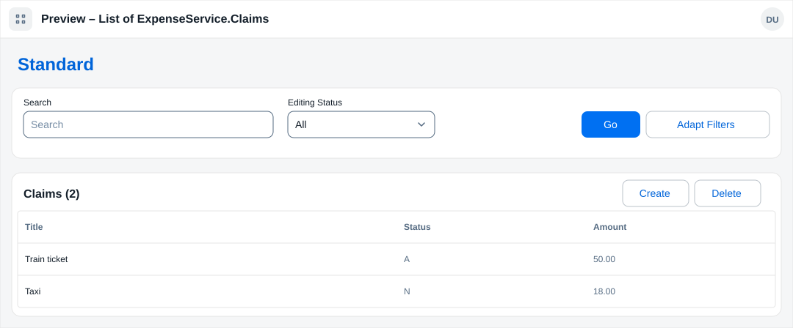
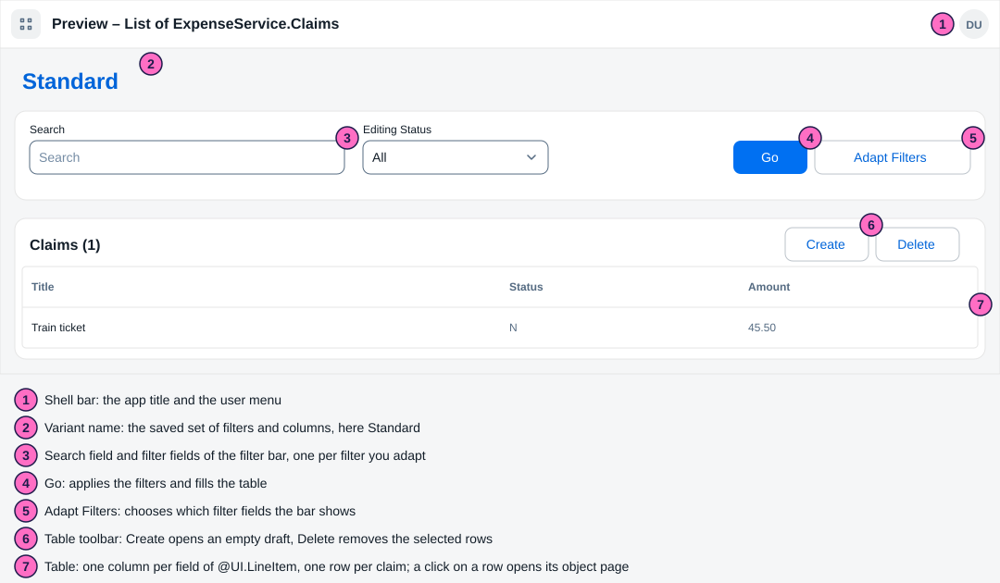
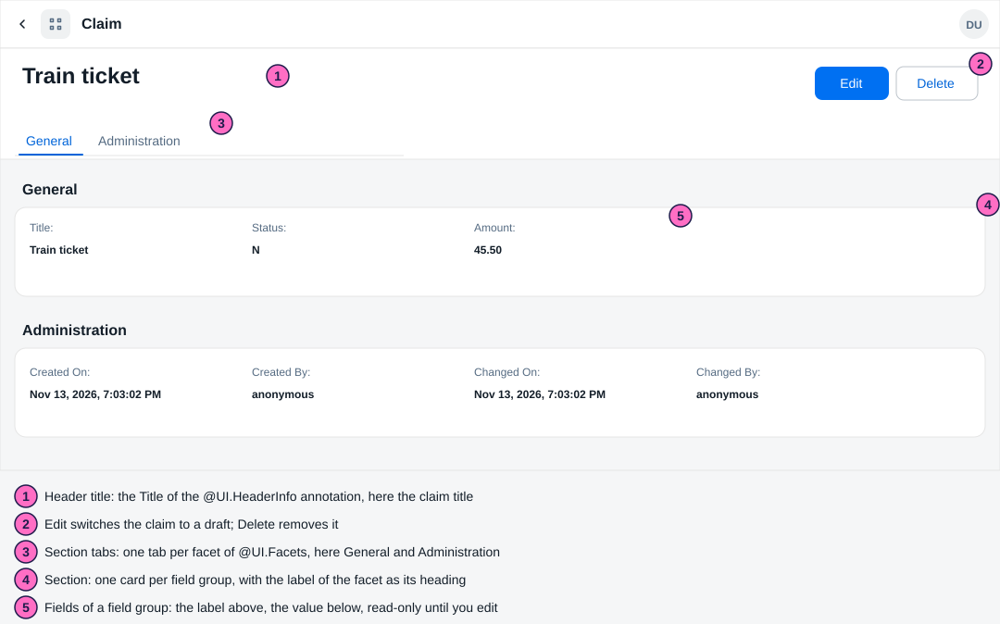
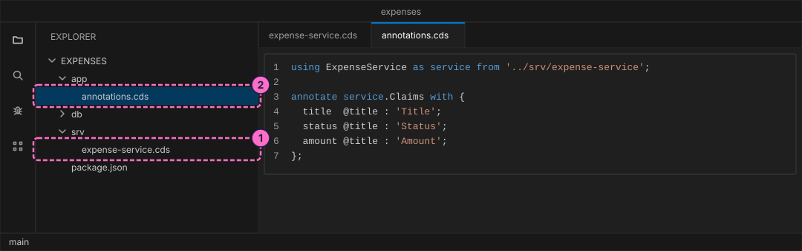
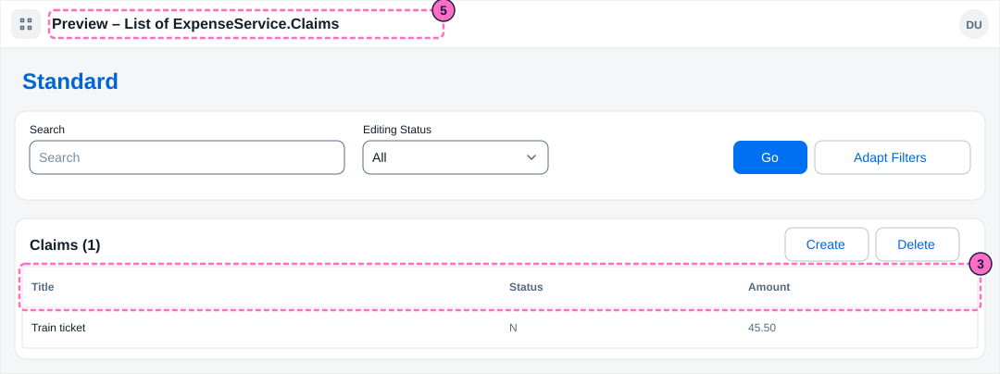
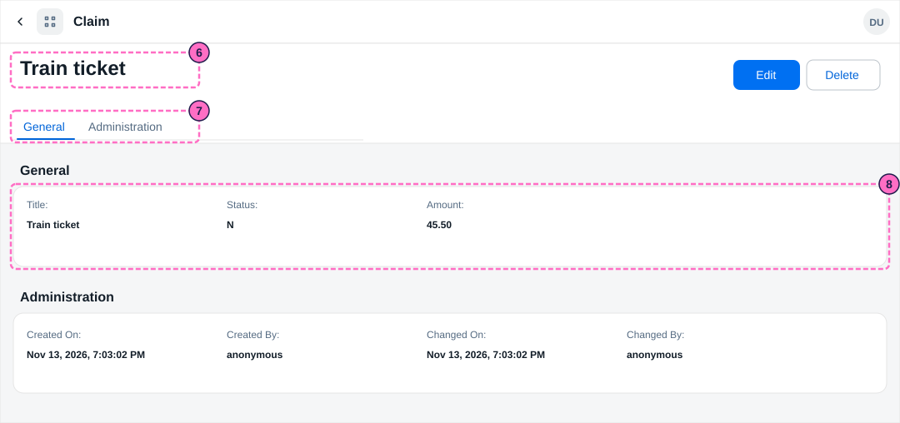
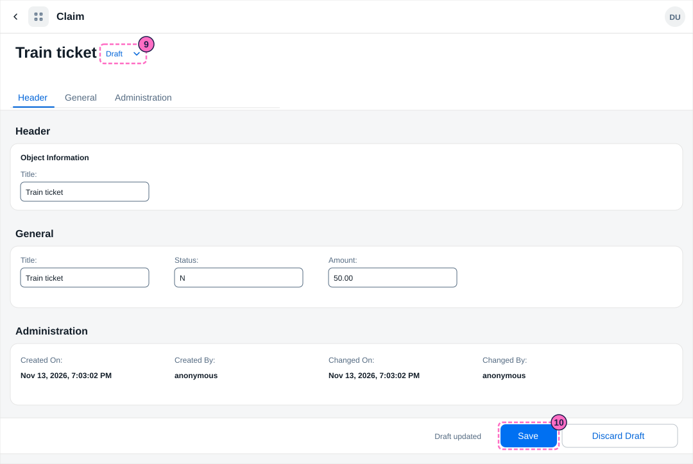
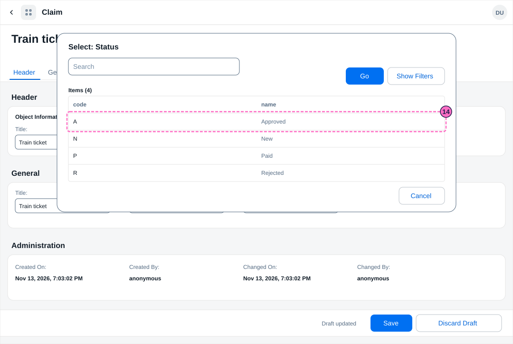

SAP Guide: Add a Fiori Elements App to a CAP Service
|
This content was generated with the assistance of AI and should be verified against the official documentation before being relied on in production. |
Checked on 2026-11-13 against CAP Node.js 10.2 (@sap/cds 10.2.2, @sap/cds-dk 10.2.1), the Fiori elements preview of cds watch (it loads SAPUI5 1.145.0) and Node.js 24.21.
What you build
This is a teaching model built with CAP. It is not SAP S/4HANA or SAP SuccessFactors and does not reproduce their screens.
You give the expenses service of the guide Your First CAP Service a user interface without writing any UI code. You write annotations, short pieces of metadata next to the service, and the Fiori elements preview of cds watch builds two pages from them: a list report that shows all claims in a table, and an object page that shows one claim. You switch a claim to a draft to edit it, add a value help that lets the user pick a status from a list, and create a second claim.

Before you start
-
No account is needed: the preview is part of the CAP tools that you installed without signing in. It loads the SAPUI5 libraries from a public content delivery network, so the computer needs internet access. Installing
@sap/cds-dkmeans accepting the SAP Developer License Agreement, version 3.2, which the lab README names. -
Do the guide Your First CAP Service first. You need its project
expenseswithdb/schema.cds,srv/expense-service.cdsand the CSV file, andcds watchmust work. -
Read SAP Fiori Elements for the idea of the floorplans and annotations, and SAP Fiori Design Guidelines for the design rules behind the pages.
-
The preview takes its language from the browser. Add
sap-language=ENto the address, as in step 5, to get the English texts of this guide. -
The figures are drawings of the pages, not screenshots, so small details can differ from your screen. A highlighted box with a number marks the part of the page that the step with the same number deals with.
Steps
The two numbered overviews show the pages that the preview builds. The list report is the start page: a filter bar above a table. The object page opens when you click a row.


Prepare the service and the labels
-
Open
srv/expense-service.cdsand put@odata.draft.enabledabove the entity line. It tells CAP to keep a draft copy of a claim while someone edits it, which the object page needs for its Edit button. The file now reads:using { sap.guide.expenses as db } from '../db/schema'; service ExpenseService { @odata.draft.enabled entity Claims as projection on db.Claims; }Source: CAP: Serving SAP Fiori UIs
-
Create the folder
app(it already exists aftercds init) and in it the fileapp/annotations.cds. The first line imports the service. The annotation gives each field a label, which the pages show above the values; without it they show the bare values.using ExpenseService as service from '../srv/expense-service'; annotate service.Claims with { title @title : 'Title'; status @title : 'Status'; amount @title : 'Amount'; };
Show the list report
-
Add the annotation
UI.LineItemtoapp/annotations.cds. It lists the fields that become the columns of the table, in this order:annotate service.Claims with @( UI.LineItem : [{ Value : title }, { Value : status }, { Value : amount }] ); -
In the terminal, in the project folder, start the server (or leave it running:
cds watchreloads when you save):cds watch -
Open http://localhost:4004/$fiori-preview/ExpenseService/Claims?sap-language=EN#preview-app. The welcome page at http://localhost:4004 offers the same page behind the link Fiori preview next to the entity
Claims. The page is a list report: a filter bar with a search field and Editing Status, the buttons Go and Adapt Filters, and the table Claims (1) with the columns Title, Status and Amount and your claim.
Describe the object page
-
Add the annotation
UI.HeaderInfo. ItsTitlenames the field that the object page shows as its large title, andTypeNameandTypeNamePluralname what one and many rows are called:annotate service.Claims with @( UI.HeaderInfo : { TypeName : 'Claim', TypeNamePlural : 'Claims', Title : { Value : title } } ); -
Add the annotations
UI.Facetsand two field groups. A facet is a section of the object page, hereGeneralandAdministration, and each points to a field group, the list of fields that the section shows. The fieldscreatedAt,createdBy,modifiedAtandmodifiedBycome from the aspectmanagedof the first guide.annotate service.Claims with @( UI.Facets : [ { $Type : 'UI.ReferenceFacet', Label : 'General', Target : '@UI.FieldGroup#General' }, { $Type : 'UI.ReferenceFacet', Label : 'Administration', Target : '@UI.FieldGroup#Admin' } ], UI.FieldGroup #General : { Data : [{ Value : title }, { Value : status }, { Value : amount }] }, UI.FieldGroup #Admin : { Data : [{ Value : createdAt }, { Value : createdBy }, { Value : modifiedAt }, { Value : modifiedBy }] } ); -
Click the row Train ticket in the list. The object page opens with the title, the buttons Edit and Delete, the tabs General and Administration, and one card per section with the fields and their labels.

Edit a claim as a draft
-
Click Edit. The page becomes a draft: a marker Draft appears next to the title, a Header tab and section with the title field are added, the fields become input fields, and a footer bar shows Save and Discard Draft. Nothing is stored in the real claim yet; CAP keeps the changes in the draft.
-
Change the Amount to
50.00. The footer shows Draft updated as soon as you leave the field. Click Save. A message Object saved appears, and the object page shows the new amount; the field Changed On has a new time.
Add a value help for the status
The status field accepts any letter. A value help lets the user pick from a list of allowed statuses. The list is an entity of its own.
-
In
db/schema.cds, add the entityStatuseswith a keycodeand aname, and create the CSV filedb/data/sap.guide.expenses-Statuses.csvwith four rows:entity Statuses { key code : String(1); name : String(20); }code,name N,New A,Approved R,Rejected P,Paid -
In
srv/expense-service.cds, add the entity to the service, belowClaims.@readonlylets users read the list but not change it:@readonly entity Statuses as projection on db.Statuses; -
In
app/annotations.cds, annotate the fieldstatuswithCommon.ValueList.CollectionPathnames the entity set that holds the allowed values. The first parameter links the fieldstatusof the claim (LocalDataProperty) to the columncodeof the list and writes the chosen code back into the field; the second shows thenamecolumn as information:annotate service.Claims with { status @Common.ValueList : { CollectionPath : 'Statuses', Parameters : [ { $Type : 'Common.ValueListParameterInOut', LocalDataProperty : status, ValueListProperty : 'code' }, { $Type : 'Common.ValueListParameterDisplayOnly', ValueListProperty : 'name' } ] }; }; -
Reload the preview, open the claim, click Edit and click the value help icon at the end of the Status field. The dialog Select: Status lists the four statuses, sorted by code. Click the row Approved: the field shows
A. Click Save.
Check the result
-
The list report shows Claims (2): Train ticket with the status
Aand the amount50.00, and Taxi with the statusNand the amount18.00. -
http://localhost:4004/odata/v4/expense/Claims?$select=title,status,amountreturns the same two claims. -
The terminal shows no line that starts with
[ERROR].
What can go wrong
| Symptom | Cause | Fix |
|---|---|---|
The object page shows only values, with no labels above them |
The fields have no label, because the annotation of step 2 is missing. |
Add the annotation of step 2 and reload the page. |
The texts are not in English |
The preview takes its language from the browser. |
Add |
Clean up
Press Ctrl+C in the terminal to stop cds watch. The database lived only in memory, so the claim Taxi and the changes are gone at the next start; the CSV files bring back the starting data.
Where to go next
-
Previous guide: Your First CAP Service.
-
Reference: SAP Fiori Elements.
-
Reference: SAP Fiori Design Guidelines.